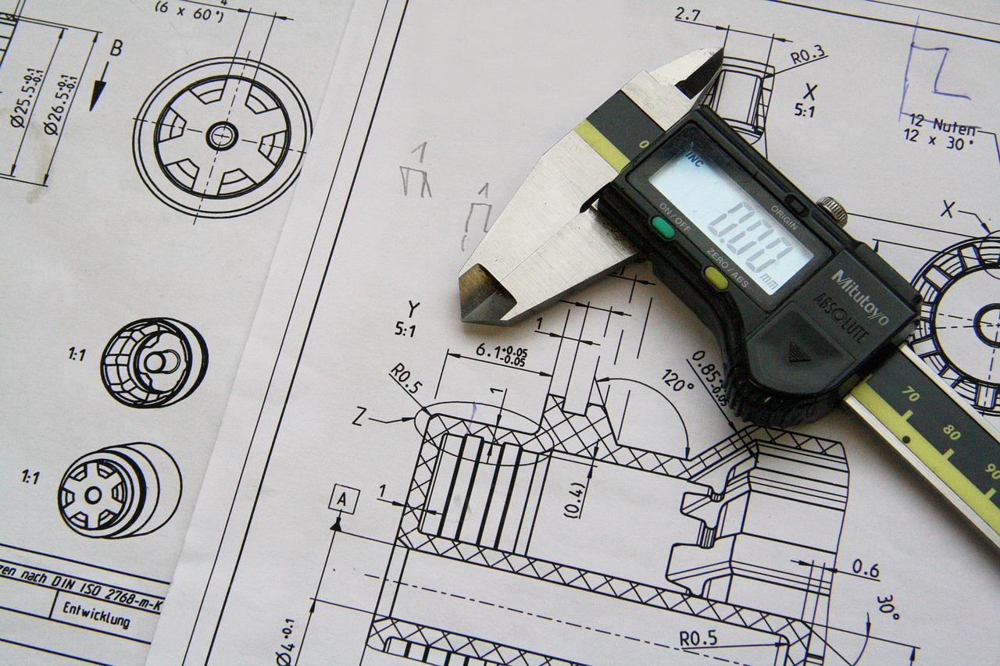

Gambar teknik adalah bahasa universal yang digunakan oleh insinyur dan teknisi untuk menggambarkan, merancang, dan memproduksi suatu produk atau komponen. Gambar ini berfungsi sebagai alat komunikasi antara perancang dan pelaksana. Karakteristik utama Gambar Teknik adalah bersifat informatif, akurat, dan tersandar, serta menggunakan simbol dan notasi yang disepakati secara internasional.
Fungsi Gambar Teknik:
Mempermudah komunikasi antara desainer, teknisi, dan operator produksi.
Berfungsi sebagai arsip untuk perencanaan, perakitan, atau pemeliharaan.
Memberikan informasi detail untuk proses pembuatan suatu komponen atau sistem.

Gambar Teknik
2. Peralatan Gambar Teknik
Peralatan Manual:
Papan gambar, penggaris T, jangka, penggaris segitiga, pensil teknik.
Peralatan Digital:
AutoCAD, SolidWorks, dan CATIA.
AutoCAD: Perangkat Lunak untuk Gambar Teknik Digital
3. Standar Gambar Teknik
Standar gambar teknik berbeda-beda tergantung wilayah, tetapi memiliki tujuan yang sama, yaitu memastikan komunikasi teknis yang efektif. Standar seperti ISO, ASME, dan DIN sering digunakan secara global, sementara SNI adalah standar utama di Indonesia.
Standar Internasional: ISO
Standar Amerika: ASME
Standar Jerman: DIN
Standar Jepang: JIS
Standar Inggris: BS
Standar Nasional Indonesia: SNI
Standar Rusia: GOST
Standar Internasional ISO untuk Gambar Teknik
4. Jenis-Jenis Garis
Garis dalam gambar teknik memiliki makna tertentu dan digunakan sesuai standar:
Garis Tebal (Garis Utama): Menunjukkan kontur luar objek (ketebalan 0.5 mm).
Garis Tipis: Untuk garis bantu, dimensi, atau proyeksi (ketebalan 0.25 mm).
Garis Putus-putus: Menunjukkan bagian yang tersembunyi atau tidak terlihat.
Garis Sumbu: Untuk menandai garis tengah pada lingkaran atau simetri objek.
Contoh Berbagai Jenis Garis pada Gambar Teknik
5. Teknik Menggambar
Teknik menggambar dilakukan secara manual atau digital:
Manual: Menggunakan alat seperti penggaris, jangka, dan pensil teknik untuk membuat sketsa dan menambahkan detail.
Digital: Menggunakan perangkat lunak seperti AutoCAD atau SolidWorks yang mempermudah proses dengan fitur seperti layout, layer, dan dimensi otomatis.
Menggambar Teknik Manual dengan Alat BantuMenggambar Teknik Digital dengan AutoCAD
6. Simbol dalam Gambar Teknik
Simbol dalam gambar teknik menyampaikan informasi sesuai standar, seperti simbol kekasaran permukaan, las, dimensi, toleransi geometris, dan proyeksi. Simbol ini memastikan komunikasi yang jelas dan universal dalam gambar teknik.